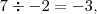
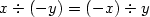
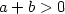
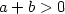
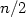

Wstęp do programowania/Wstęp do algorytmów
From Studia Informatyczne
Spis treści[schowaj] |
Wprowadzenie do algorytmów

Najważniejszym pojęciem w informatyce jest algorytm. Nazwa ta ma swoje korzenie w średniowieczu i wzięła się ze zniekształconego nazwiska wielkiego uczonego arabskiego Al Chuwarizmiego, który żył na przełomie VIII i IX wieku i pochodzącego z Chorezmu. Al Chuwarizmi, działając w Domu Nauk kalifa Al Mamuna w Bagdadzie, opublikował ważne dzieła matematyczne, wśród nich Hisab al dżabr w'al muqabala – traktat o rozwiązywaniu równań, z którego wzięła nazwę algebra – jeden z głównych działów matematyki. W traktacie tym, poza wprowadzeniem systemu zapisu pozycyjnego, zaczerpniętego od Hindusów, a zwanego arabskim, podał między innymi metody rozwiązywania równań kwadratowych. Metody te odwoływały się do pojęć geometrycznych; utożsamiano wtedy liczby i działania z miarami obiektów geometrycznych. Liczby rzeczywiste to były długości odcinków, dodawanie to było sklejanie odcinków, mnożenie odpowiadało wyliczaniu pola prostokąta o danych bokach, a pierwiastkowanie wyznaczaniu boku kwadratu o zadanym polu. Arabowie, podobnie jak starożytni Grecy, nie znali pojęcia liczby ujemnej, stąd, gdy dziś patrzymy na metody Al Chuwarizmiego, poza oczywistym pięknem, wydają się nam one nieco dziwaczne. Ale cóż – wtedy inaczej po prostu się nie dało.
W pierwszym kroku rozwiązania Al Chuwarizmi polecał podzielić wszystkie współczynniki trójmianu kwadratowego przez współczynnik przy , aby uwolnić się od jednego z nich; w końcu pierwiastki przez takie podzielenie nie zmieniają się, a metoda staje się prostsza. Al Chuwarizmi rozważał zatem równania postaci dla różnych klas b i c: dodatnich, ujemnych i równych zero. Miał zatem do czynienia z 9 różnymi przypadkami i dla każdego z nich podał metodę wyznaczania pierwiastka takiego równania. Przyjrzyjmy się jednemu z nich: dane są zaczerpnięte bezpośrednio z omawianej księgi. Rozwiązujemy równanie
Jest to zatem równanie z klasy równań, w których współczynnik przy x jest dodatni, a wyraz wolny ujemny (dla wygody przenieśliśmy go na prawą stronę, więc po tamtej stronie jawi się nam jako c dodatnie). Oto co proponował Al Chuwarizmi.

Rysujemy kwadrat o boku x. Po jednej jego stronie doklejamy prostokąt o bokach x oraz , po drugiej pod kątem prostym identyczny prostokąt. Uzupełniamy powstały kąt prosty wyznaczony przez 2 odcinki długości 5 do kwadratu i otrzymujemy duży kwadrat, którego pole wynosi
Bok tego dużego kwadratu ma więc długość 8, a że powstał on przez sklejenie odcinka o długości x oraz odcinka o długości 5, więc . Drugi pierwiastek w tym przypadku nas nie interesuje: jest ujemny, a więc go "nie ma" – liczby ujemne nie istniały wówczas w świadomości współczesnych.
Zauważmy, że konstrukcję tę, a zatem i stosowne obliczenia, można powtórzyć dla każdej pary (b,c) w której b > 0, zaś c < 0. Wyrażając jednym wzorem efekt obliczeń uzyskalibyśmy wyrażenie
Obliczenie wartości x mogłoby się odbywać według następującego schematu:
- podziel
 przez i zapamiętaj wynik na zmiennej pomocniczej
przez i zapamiętaj wynik na zmiennej pomocniczej
- podnieś do kwadratu
- dodaj do otrzymanej liczby wartość
- wyciągnij z otrzymanej sumy pierwiastek kwadratowy
- odejmij od tego, co uzyskałeś uprzednio zapamiętaną wartość
- otrzymana liczba jest szukanym (nieujemnym) pierwiastkiem równania .
Zróbmy parę obserwacji.
Po pierwsze powyższa procedura jest wykonywalna dla każdych danych b,c>0. Zauważmy, że jedyna operacja, która mogłaby sprawić kłopoty z wykonaniem, to odejmowanie w punkcie 5 naszej procedury. Jednak można łatwo sprawdzić, że daje ono zawsze wynik dodatni:
 mamy .
mamy .Po drugie, zastosowaliśmy tu pewne niewielkie, ale ważne uproszczenie algorytmu: użyliśmy w jego opisie pomocniczej zmiennej , dzięki której nie musieliśmy dwukrotnie dzielić wartości przez .
Po trzecie, zapisując wzór na równanie kwadratowe skorzystaliśmy z tradycji notacyjnej, w myśl której w wyrażeniach arytmetycznych zawsze wiadomo, w jakiej kolejności wykonuje się działania. W szczególności w wyrażeniu podpierwiastkowym najpierw dzieliliśmy b przez 2, potem podnosiliśmy wynik do kwadratu, a na końcu dodawaliśmy do niego c. To, co w podanym przez Al Chuwarizmiego przepisie wymagało uściślenia kolejności, można wyrazić wzorem w zwartej formie, umówiwszy się zawczasu co do interpretacji podanej notacji. Niezwykle ważne jest, aby używana notacja była jednoznaczna i abyśmy nie popełniali błędu przy interpretacji wyrażeń, w szczególności żebyśmy byli zgodni co do kolejności wykonywanych działań. Wrócimy do tego zagadnienia w wykładzie o gramatykach.
Ćwiczenie
- Jak będzie działała podana metoda, dla c<realnowiki><realnowiki> = </realnowiki></realnowiki>0?
- Zaprojektuj geometryczną metodę w stylu Al Chuwarizmiego dla równania . Czy metoda ta da poprawne wyniki dla wszystkich równań postaci przy dodatnich b, c?
Co to są zatem algorytmy? Ogólnie określamy tym mianem wszelkie przepisy postępowania, które doprowadzają do uzyskania pożądanego efektu – rozwiązania zadania. W potocznej mowie mówimy czasem o algorytmach postępowania niewiele mających wspólnego z komputerami, jednak dla informatyków algorytmy wiążą się nierozerwalnie z programowaniem.
Prawdziwe problemy pojawiają się, gdy chcemy algorytm zakodować w taki sposób, żeby był dobrze wykonany przez maszynę. Nie możemy sobie pozwolić na odwoływanie się do doświadczenia, machanie rękami, domysły. Komputer niczego się nie domyśla, ba, nie rozumie języka naturalnego i potrzebna będzie nam precyzyjna notacja do komunikacji z nim. Istotą programowania jest bowiem wyrażanie algorytmów w sposób ścisły, podlegający rygorom skończonej liczby reguł, których znaczenie w jednoznaczny sposób jesteśmy określić.
Al Chuwarizmi nie był oczywiście pierwszym człowiekiem, który stosował podejście algorytmiczne do rozwiązywania problemów. W rzeczywistości każdy z nas stosuje algorytmy w rozmaitych sytuacjach życiowych. Człowiek pierwotny miał algorytm polowania na mamuty, czy rozpalania ognia. Dzisiaj często wykonujemy pewne algorytmy, nie zdając sobie sprawy. Warto przytoczyć parę przykładów algorytmów z życia codziennego:

Takich przykładów można przytaczać tysiące. Właściwie niemal wszystko, co robimy, podlega jakiemuś algorytmowi działania – przy czym warto podkreślić, że ludzie nie muszą mieć algorytmów objaśnianych dokładnie: wiele mogą wywnioskować z kontekstu, doświadczenia, po prostu domyślając się, o co może chodzić. Kucharce nie trzeba wyjaśniać, co to znaczy "zeszklić cebulkę na ciemnozłoty kolor", a monterowi - co znaczy "zaizolować przewody".
Z komputerami jest jednak inaczej. Są to wyjątkowo głupie urządzenia i jeśli dokładnie nie wytłumaczymy, co mają zrobić, stają się bezradne. Między bajki należy włożyć rozmaite sytuacje znane z literatury fantastyczno-naukowej, w których komputery są równorzędnymi partnerami intelektualnymi dla ludzi. Sztuczna inteligencja, nawet jeśli istnieje, bazuje na ściśle określonych algorytmach działania i nie ma tam miejsca na intuicję, domyślenie się czegokolwiek czy nagłe olśnienie, które są doskonale znane istotom myślącym. Ludzie często nie zdają sobie sprawy, jak wiele w algorytmach, którymi się posługują, zależy od nieuświadamianego kontekstu, jak dużo muszą dopowiadać do rzekomo precyzyjnych procedur działania. Komputery bezlitośnie wyłapują luki w specyfikacji procedur i nie ma mowy, żeby domyśliły się, że wykonują jakąś bezsensowną akcję, typu wydrukowanie żądania zapłacenia 0 zł. Jeśli wyraźnie nie zapiszemy w algorytmie, że takich żądań nie należy generować, to komputer ślepo wykona nasze polecenie, choćby było ono w oczywisty sposób bezsensowne. W dalszych wykładach zobaczymy przykłady, w których algorytmy z pozoru wyglądające na poprawne i kompletne, będą miały luki powodujące błędne działanie.
Ćwiczenie
Znajdź w Internecie przykłady bezsensownego zachowania się komputerów. Spróbuj domyślić się, jakiego rodzaju błąd programisty był przyczyną kompromitacji.
Spróbujmy przymierzyć się do problemu znanego jeszcze ze starożytności. Przy dodawaniu sprowadza się mianowniki do najmniejszej wspólnej wielokrotności. Wyznaczenie jej najczęściej polega na tym, że oblicza się największy wspólny dzielnik, dzieli się jedną z liczb przez niego i wynik mnoży przez drugą. Jak jednak znaleźć największy wspólny dzielnik?
Operacja dzielenia z resztą
Dla danych liczb całkowitych x, y, z zastrzeżeniem, że określamy dwie operacje: wynik i resztę z dzielenia x przez y następująco:, , gdzie liczby c i r spełniają następujące zależności: oraz
Przykład


Ćwiczenie
Czy zawsze oraz ?
Wskazówka
[pokaż]
Odpowiedź
[pokaż]
Dane są dwie liczby całkowite nieujemne  , takie, że . Wyznacz największą liczbę naturalną taką, że <realnowiki><realnowiki>= </realnowiki></realnowiki>0 i . Liczbę tę nazywamy największym wspólnym dzielnikiem i oraz oznaczamy przez .
, takie, że . Wyznacz największą liczbę naturalną taką, że <realnowiki><realnowiki>= </realnowiki></realnowiki>0 i . Liczbę tę nazywamy największym wspólnym dzielnikiem i oraz oznaczamy przez .
Zauważmy, że zawsze .
Załóżmy więc od tej pory, że .
Algorytm Euklidesa
Wiadomo, że nie istnieje ogólny wzór na największy wspólny dzielnik. Jak więc go można wyznaczyć? Metoda, którą poznamy, to jeden z najstarszych spisanych algorytmów zwany algorytmem Euklidesa, od imienia jednego z największych matematyków w całej historii, który go opublikował w swoim wiekopomnym dziele „Elementy”. [Elementy]
Euklides zauważył, że gdy mniejsza z liczb jest równa zero, to największy wspólny dzielnik jest równy drugiej z nich, a gdy obie są dodatnie, to jest równy największemu wspólnemu dzielnikowi ich różnicy oraz mniejszej z nich. ref{MatematykaDyskretna...} Zapisując to zdanie za pomocą wzoru otrzymujemy
Taki wzór jak powyżej nazywamy rekurencyjnym. Istotą definiowania rekurencyjnego jest odwoływanie się w definicji jakiegoś pojęcia do niego samego, zazwyczaj zastosowanego dla prostszych danych. Tak jak tutaj: żeby zdefiniować największy wspólny dzielnik, wykorzystujemy w definicji też pojęcie największego wspólnego dzielnika, tylko dla nieco mniejszych argumentów. Na dobrą sprawę taka definicja wygląda nieco podejrzanie, ale w rzeczywistości jest całkowicie poprawna. W końcu za jej pomocą jesteśmy w stanie obliczyć największy wspólny dzielnik dla dowolnej pary argumentów. Spróbujmy:
W ciągu tym odejmowaliśmy od pierwszego argumentu drugi, a gdy wynik okazywał się od niego mniejszy, zamienialiśmy argumenty miejscami. Czy możemy być pewni, że zawsze w ten sposób postępując otrzymamy w końcu jeden z argumentów równy zero?
Ćwiczenie
Udowodnij, że zawsze w skończonej liczbie kroków zejdziemy z jednym argumentem do zera.
Wskazówka
[pokaż]
Odpowiedź
[pokaż]
Zauważmy, że podaliśmy przepis otrzymywania największego wspólnego dzielnika. Jest to właśnie algorytm Euklidesa. Za jego pomocą możemy znaleźć największy wspólny dzielnik dla dowolnej pary argumentów.
Przedstawmy program w notacji, którą formalnie wprowadzimy nieco później, obliczający największy wspólny dzielnik zgodnie z podanym algorytmem.
Euklides 1
Read(a,b); //Wczytujemy a i b, zakładając że użytkownik wie, że a>=b, a+b>0
while b > 0 do
begin
if a< b then zamień(a,b); //po wykonaniu tej instrukcji zawsze a>=b
a:=a-b //tutaj być może raz wykonamy niepotrzebnie odejmowanie zera
end;
Write(a) //wypisujemy wynik, którym jest wartość a
Zastanówmy się, jak długo będziemy wykonywali nasz algorytm. Załóżmy, że dane na których pracujemy nie przekraczają . Tak duże liczby jako argumenty nie są jakimś dziwactwem: w rzeczywistości szukanie największego wspólnego dzielnika jest częścią szyfrowania RSA – powszechnie stosowanego protokołu kryptograficznego i zazwyczaj używa się tu znacznie większych liczbach – ponadstucyfrowych.
Dobierzmy możliwie złośliwe dane. Oczywiście aby algorytm działał jak najdłużej, należy odejmować jak najmniejsze wartości w każdym kroku. Weźmy zatem . Widać, że dla tych danych wykona się  obrotów pętli: będziemy żmudnie odejmowali jedyneczkę od sporej dość liczby. Jak długo to może potrwać?
obrotów pętli: będziemy żmudnie odejmowali jedyneczkę od sporej dość liczby. Jak długo to może potrwać?
Przyjmijmy, że mamy do czynienia z bardzo szybkim komputerem, który na jeden obrót pętli potrzebuje jedną dziesięciomiliardową sekundy . Zatem w ciągu doby mamy obrotów pętli. Dób w ciągu roku jest 365, czyli razem mamy obrotów pętli na rok. A od Wielkiego Wybuchu minęło niespełna 14 miliardów lat, łącznie niespełna obrotów pętli. Przyjąwszy, że ktoś włączył nasz komputer na początku Wszechświata i on do dziś z tą zawrotną prędkością wykonuje nasz program dla tych właśnie danych, widzimy, że do dziś wykonałby niespełna jedną dwudziestą wszystkich obliczeń. Jeszcze dwadzieścia parę takich Wszechświatów i program zakończyłby swoje działanie.
Co należy w takiej sytuacji zrobić? Niektórzy myślą, że trzeba kupić szybszy komputer. Żarty na bok. Ale istnieją użytkownicy, którzy gdy im program działa zbyt wolno, myślą przede wszystkim o sprzęcie. W wielu przypadkach jednak główne rezerwy tkwią w samym algorytmie. Dlatego też w trakcie tego kursu będziemy wielką wagę przykładali do jakości algorytmów i szukali jak najlepszych rozwiązań.
Zauważmy (a Euklides to wiedział długo przed nami), że tak naprawdę odejmowanie wykonujemy tylko po to, żeby wyznaczyć resztę z dzielenia przez . W końcu dopóki jest większe od , odejmujemy od całkowite wielokrotności , a zamieniamy rolami z gdy tylko spadnie poniżej . W momencie, gdy z zamieniają się rolami, ma wartość właśnie reszty z dzielenia przez . Można by zatem pominąć całe to odejmowanie, jeśli udałoby się nam od razu znaleźć tę resztę z dzielenia. A to nie jest takie trudne – można choćby stosować poznane w szkole podstawowej słupkowe dzielenie, które nad kreską daje wynik dzielenia, a na dole – resztę. Zmodyfikujmy zatem algorytm Euklidesa:
Euklides 2
Read(a,b); //Wczytujemy a i b, zakładając że użytkownik wie, że a>=b, a+b>0
while b > 0 do
begin
a:=a mod b;
zamień (a,b) //reszta jest zawsze mniejsza od dzielnika, więc w ciemno możemy
zamienić a z b
end;
Write(a) //Wypisujemy wynik
Podobnie jak poprzednio, możemy bez trudu pokazać, że program się zawsze zakończy.
Jak długo się tym razem będzie wykonywała nasza pętla programu? Jeśli dobranie najbardziej złośliwych danych w poprzednim przypadku było proste, to teraz wcale nie jest oczywiste dla jakich danych spośród liczb 30-cyfrowych program będzie działał najdłużej. Załóżmy, że tak jak wcześniej interesuje nas liczba obrotów pętli. Pomijamy na razie koszt związany z operacją dzielenia z resztą, zakładając że jest on stały.
Ćwiczenie
Znajdź dwie liczby dwucyfrowe, dla których algorytm Euklides 2 wykona się najwięcej razy.
Wskazówka 1
[pokaż]
Wskazówka 2
[pokaż]
Odpowiedź
[pokaż]
Liczby Fibonacciego
Aby rozwiązać ten problem doboru najbardziej złośliwych danych, należy spojrzeć na problem od drugiej strony: jak za pomocą najmniejszych liczb uzyskać z góry zadaną liczbę obrotów pętli? Widać, że aby pętla wykonała się raz, wystarczą dane . Ale te dane nie mogą być wynikiem wcześniejszego obrotu pętli: pamiętajmy, że pierwszy z argumentów jest zawsze dzielnikiem z poprzedniego obrotu pętli, a skoro jest nim jedynka, to reszta nie mogła być równa jeden. Zatem przy więcej niż jednym obrocie pętli najmniejsze dane dla ostatniego obrotu pętli, to (po czym dostajemy od razu parę kończącą pętlę). Jakie były zatem dane przedostatnie? Widać, że dzieliliśmy przez  i dostaliśmy resztę . Zatem w poprzednim kroku mogliśmy mieć pary lub lub . Z nich para jest najoszczędniejsza – są to liczby, które dają najmniejszą sumę, a liczba obrotów naszej pętli jest równa . Jak wyglądała zatem para dwa kroki wstecz? Dzielnik musiał być równy , a reszta równa , więc w grę wchodzą pary . Z nich znów najoszczędniejsza jest para . Dalej, cofając się i rozumując w analogiczny sposób, dostaniemy pary i kolejno . Widać zatem, że zawsze najoszczędniej będzie tak dobierać kolejną parę, aby wynik dzielenia był równy , czyli innymi słowy, jeśli w kolejnym obrocie pętli argumenty są równe i , to w poprzednim powinny być równe i . Wtedy bowiem jest resztą z dzielenia przez , natomiast iloraz równy jest 1.
i dostaliśmy resztę . Zatem w poprzednim kroku mogliśmy mieć pary lub lub . Z nich para jest najoszczędniejsza – są to liczby, które dają najmniejszą sumę, a liczba obrotów naszej pętli jest równa . Jak wyglądała zatem para dwa kroki wstecz? Dzielnik musiał być równy , a reszta równa , więc w grę wchodzą pary . Z nich znów najoszczędniejsza jest para . Dalej, cofając się i rozumując w analogiczny sposób, dostaniemy pary i kolejno . Widać zatem, że zawsze najoszczędniej będzie tak dobierać kolejną parę, aby wynik dzielenia był równy , czyli innymi słowy, jeśli w kolejnym obrocie pętli argumenty są równe i , to w poprzednim powinny być równe i . Wtedy bowiem jest resztą z dzielenia przez , natomiast iloraz równy jest 1.
Zbadajmy zatem, jakie najmniejsze argumenty dają zadaną liczbę obrotów pętli.
| Liczba obrotów | a | b |
|---|---|---|
|
0 |
1 |
0 |
Liczby, które występują w tabeli, są znane pod nazwą liczb Fibonacciego. Mają one w informatyce duże znaczenie i warto znać podstawowe fakty o nich. Definiuje się je następująco:
Liczby Fibonacciego
dla
Każda kolejna liczba Fibonacciego jest sumą dwóch swoich poprzedniczek. Parę początkowych wyrazów tego ciągu warto znać na pamięć.
|
0 |
0 |
Widzimy więc, że poczynając od drugiego wiersza tabeli (), najbardziej złośliwych danych dla algorytmu Euklides2 mamy zawsze . Aby wymusić  obrotów pętli musimy wziąć zatem co najmniej -gą i -wszą liczbę Fibonacciego.
obrotów pętli musimy wziąć zatem co najmniej -gą i -wszą liczbę Fibonacciego.
Liczby Fibonacciego rosną szybko. Konkretnie znany jest ogólny wzór na -tą liczbę Fibonacciego przypisywany Binetowi, a znany jeszcze na pewno Eulerowi 100 lat przed Binetem.
Dowód tego wzoru można znaleźć w #MatematykaDyskretna-xxx.
Wprowadzając oznaczenia , otrzymujemy wzór w nieco bardziej czytelnej postaci
Biorąc pod uwagę to, że , zaś i to, że w związku z tym składnik w naszym wzorze bardzo szybko dąży do zera, możemy łatwo pokazać, że n-ta liczba Fibonacciego jest równa
gdzie przez oznaczamy zaokrąglenie , czyli liczbę całkowitą najbliższą danej liczby rzeczywistej  . Zatem n-ta liczba Fibonacciego jest prawie dokładnie równa n-tej potędze
. Zatem n-ta liczba Fibonacciego jest prawie dokładnie równa n-tej potędze  podzielonej przez . Zauważmy jeszcze, że skoro tak, to po zlogarytmowaniu obustronnie wzoru (∗) przy podstawie otrzymujemy wzór
podzielonej przez . Zauważmy jeszcze, że skoro tak, to po zlogarytmowaniu obustronnie wzoru (∗) przy podstawie otrzymujemy wzór
Zatem indeks  zadanej liczby Fibonacciego wynosi
zadanej liczby Fibonacciego wynosi
Zapamiętajmy sobie niezwykle ważny wniosek:
Wniosek
Wprowadźmy oznaczenie na największą liczbę Fibonacciego mniejszą od , a przez jej indeks. Ponieważ dla dowolnych argumentów liczba obrotów pętli algorytmu Euklides2 nie przekracza liczby obrotów pętli dla argumentów najbardziej złośliwych, czyli oraz poprzedniej liczby Fibonacciego , a liczba obrotów pętli dla tych argumentów jest o mniejsza, niż indeks większej z nich, to otrzymujemy szacowanie na liczbę obrotów pętli dla dowolnych argumentów i :
skąd
a biorąc pod uwagę, że
otrzymujemy
Zapamiętajmy jeszcze jedną ważną prawidłowość.
Indeksy liczb Fibonacciego rosną logarytmicznie wolno w stosunku do wartości tych liczb.
Zatem funkcja [n]FIB(x) rośnie logarytmicznie ze względu na x.
Wracając do naszych danych trzydziestocyfrowych: możemy oszacować liczbę obrotów pętli przez . Zatem wykonamy nie więcej niż 150 obrotów pętli, co oczywiście będzie w zasięgu nawet bardzo wolnego komputera. Pamiętajmy, że przy dużych liczbach możemy zapomnieć o wbudowanych w języki programowania procedurach arytmetycznych. O arytmetykę musimy zadbać sami. Własną arytmetyką dużych liczb zajmiemy się później.
Zauważmy pewną niedogodność. W algorytmie Euklides2 jeden krok pętli jest nieco trudniejszy. W poprzednim algorytmie Euklides1 mieliśmy tylko porównywanie liczb i ich odejmowanie. Tutaj musimy zaprogramować dzielenie z resztą. Jest to nie tylko trudniejsze, ale i ogólnie wolniejsze od odejmowania. Jeśli zdecydujemy się na algorytm szkolny dzielenia słupkowego, to trzeba będzie wykonać całą serię obliczeń realizujących kolejne kroki wyznaczania cyfr ilorazu. Każdy z tych kroków wymaga wyznaczenia stosownej cyfry wyniku, przemnożenia jej wartości przez dzielnik, a następnie odjęcia od fragmentu dzielnej tego wyniku. Robimy to z grubsza tyle razy, ile cyfr ma iloraz.
Jeżeli za miarę wielkości liczby przyjmiemy długość jej reprezentacji w systemie pozycyjnym (czyli liczbę cyfr), to o ile porównywanie oraz odejmowanie można zrobić w czasie proporcjonalnym do długości tej reprezentacji, to dzielenie może wymagać kwadratowego czasu. Niech długość dzielnej wynosi . Zauważmy, że jeśli dzielnik jest o połowę krótszy od dzielnej, (czyli mając długość  jest mniej więcej równy pierwiastkowi kwadratowemu z dzielnej), to iloraz będzie miał długość podobną jak dzielnik, czyli i tyle razy będzie się musiała wykonać zasadnicza pętla algorytmu dzielącego, bo tyle cyfr trzeba wyznaczyć. Z kolei wyznaczenie każdej cyfry ilorazu wymaga odjęcia jakiejś niewielkiej wielokrotności dzielnika, a więc liczby również z grubsza -cyfrowej. A odejmowanie jest proporcjonalnie kosztowne do długości argumentów. Łącznie zatem cyfr ilorazu razy jednocyfrowych kroków przy odejmowaniu daje nam łącznie  , więc kwadratowo wiele w stosunku do .
, więc kwadratowo wiele w stosunku do .
Liczba obrotów głównej pętli algorytmu jest też proporcjonalna do , bo w dowolnym systemie pozycyjnym liczba cyfr jest proporcjonalna do logarytmu z danej liczby przy podstawie będącej bazą systemu, czyli również proporcjonalna do logarytmu przy podstawie , bo logarytmy o różnych podstawach różnią się od siebie tylko o czynnik stały.
Jeśli skupimy się na operacjach na pojedynczych cyfrach, to łączna liczba wszystkich operacji będzie rzędu co najwyżej . W rzeczywistości możemy się pokusić o przypuszczenie, że będzie to nawet mniej. Zauważmy bowiem, że złośliwe dane dla głównej pętli, to kolejne liczby Fibonacciego, a te długością różnią się co najwyżej o 1, natomiast złośliwe dane dla algorytmu dzielenia z resztą, to dane różniące się długością dwukrotnie; liczby Fibonacciego można podzielić w czasie liniowym, a nie kwadratowym. I to liczby Fibonacciego będą się pojawiały cały czas, w każdym kroku algorytmu. Jeżeli zatem zaczniemy od pary kolejnych liczb Fibonacciego, to -krotnie wykonamy dzielenie kosztujące  , co nam da . Jeśli natomiast będziemy się starali wywindować koszt dzielenia, to długości kolejnych par powinny być równe . Ale wtedy łączny koszt dzieleń będzie równy
, co nam da . Jeśli natomiast będziemy się starali wywindować koszt dzielenia, to długości kolejnych par powinny być równe . Ale wtedy łączny koszt dzieleń będzie równy
Zatem obie skrajności: złośliwe dane dla zewnętrznej i dla wewnętrznej pętli dają koszt kwadratowy. Ale czy nie można wypośrodkować złośliwości tak, aby uzyskać jednak złożoność sześcienną?
Ćwiczenie
Czy można tak dobrać dane, żeby wymusić sześcienną złożoność algorytmu Euklides2?
Odpowiedź
[pokaż]
Powstaje pytanie, czy nie dałoby się znaleźć takiego algorytmu znajdowania największego wspólnego dzielnika tak, aby zachowując złożoność kwadratową korzystać z łatwiejszych operacji niż dzielenia z resztą. Rozwiązanie jest zaskakująco proste, jeśli zauważymy parę dość oczywistych faktów. Będziemy rozważać parzystość argumentów i redukować problem ze względu na tę właśnie własność. Oznaczmy zbiór liczb parzystych przez . Kluczem do algorytmu jest spostrzeżenie, że jeśli jedna liczba jest parzysta, a druga nie, to największy wspólny dzielnik nie zmieni się, jeśli parzysty argument podzielimy przez 2.
Euklides3
Oczywiście, podobnie jak poprzednio, dbamy zawsze o to, żeby pierwszy argument nie był mniejszy od drugiego i w razie czego zamieniamy je miejscami.
Euklides 3
Read(a,b); //Wczytujemy a i b, zakładając że użytkownik wie, że a>=b, a+b>0
wynik:=1;
while b > 0 do
begin
if a< b then zamień(a,b); //po wykonaniu tej instrukcji zawsze a>=b
if parzyste(a) and parzyste(b) then
begin
wynik:=wynik*2
a:=a div 2;
b:=b div 2
end
else // w przeciwnym razie
if parzyste(a) and not parzyste(b) then a:=a div 2 else
if not parzyste(a) and parzyste(b) then b:=b div 2 else
a:=a-b
end;
wynik:=wynik*a;
Write(a)
W kodzie tym posługujemy się predykatem parzyste(x), który przyjmuje wartość true (prawda), jeśli x jest parzyste i false (fałsz) jeśli jest nieparzyste. Operacja div daje nam wynik dzielenia całkowitego (z ucięciem reszty).
Przyjrzyjmy się naszemu algorytmowi pod kątem liczby obrotów pętli. Zauważmy, że w każdym obrocie we wszystkich przypadkach, poza sytuacją obu argumentów nieparzystych, co najmniej jeden z argumentów jest połowiony. Natomiast w przypadku obu argumentów nieparzystych jeden z argumentów stanie się parzysty w wyniku odejmowania i w następnym obrocie pętli zostanie podzielony przez 2. Zatem co najmniej raz na dwa obroty pętli, co najmniej jeden z argumentów jest dzielony przez 2. Ale dzieleń przez 2 można wykonać tylko logarytmicznie dużo.
Zatem łączna liczba obrotów pętli nie przekracza . Co się dzieje w każdym obrocie pętli? Każda z operacji ma złożoność liniową. Sprawdzenie parzystości liczby wymaga zajrzenia do ostatniej cyfry. Sprawdzenie, czy liczba jest równa zero wymaga przejrzenia w najgorszym razie wszystkich jej cyfr jednokrotnie. Dzielenie przez 2 i mnożenie przez dwa, podobnie jak odejmowanie, mają złożoność liniową (czyli proporcjonalną do logarytmu z wartości a i b). Zatem złożoność algorytmu na poziomie operacji na cyfrach jest kwadratowa, czyli w tym przypadku proporcjonalna do kwadratu z logarytmu .
Dziedzina algorytmiczna
Ważnym pojęciem przy określaniu algorytmu jest pojęcie dziedziny algorytmicznej. Algorytmy wykonują pewne operacje na argumentach i wyrażenie własności algorytmu, a w tym określenie jego złożoności, dokonywane jest za pomocą tych operacji. Dziedziną algorytmiczną nazwiemy zatem system relacyjny , gdzie nazywany jest nośnikiem, a zbiory , odpowiednio zbiorem operacji i relacji określonych w  , których można używać w algorytmie. Zauważmy, że od tego, jakimi operacjami i relacjami dysponujemy zależą nasze możliwości opisywania algorytmów. Zawsze musimy wiedzieć, z jakich operacji można korzystać, zanim zabierzemy się za programowanie. Czasami takie operacje przyjmują postać bibliotek gotowych procedur i funkcji – cegiełek, z których składamy nasze algorytmy.
, których można używać w algorytmie. Zauważmy, że od tego, jakimi operacjami i relacjami dysponujemy zależą nasze możliwości opisywania algorytmów. Zawsze musimy wiedzieć, z jakich operacji można korzystać, zanim zabierzemy się za programowanie. Czasami takie operacje przyjmują postać bibliotek gotowych procedur i funkcji – cegiełek, z których składamy nasze algorytmy.
W przypadku naszych trzech algorytmów Euklidesa te trzy dziedziny, to:
- Euklides1:
- Euklides2:
- Euklides3: ,
gdzie  , to zwykłe odejmowanie, operacja znajdowania reszty, - jednoargumentowa operacja dzielenia przez 2, jednoargumentowa operacja mnożenia przez 2 (zauważmy, że przez nic innego nie musimy dzielić ani mnożyć), relacja dwuargumentowa niemniejszości, jednoargumentowa relacja parzystości, zaś relacja jednoargumentowa bycia zerem.
, to zwykłe odejmowanie, operacja znajdowania reszty, - jednoargumentowa operacja dzielenia przez 2, jednoargumentowa operacja mnożenia przez 2 (zauważmy, że przez nic innego nie musimy dzielić ani mnożyć), relacja dwuargumentowa niemniejszości, jednoargumentowa relacja parzystości, zaś relacja jednoargumentowa bycia zerem.
Uświadomienie sobie, w jakiej dziedzinie algorytmicznej operujemy, jest ważne między innymi z punktu widzenia porównywania algorytmów. Łatwo jest bowiem "skrzywdzić" jakiś algorytm nie zauważając, że działa on w uboższej dziedzinie niż rzekomo lepszy, a przyjrzenie się kosztowi operacji podstawowych daje lepszy wgląd w istotę złożoności.
Jeszcze parę słów na temat złożoności algorytmów. Jak mogliśmy to zauważyć, brak analizy złożoności może doprowadzić do porażki – algorytm, nawet poprawny, może stać się praktycznie bezużyteczny, jeśli będzie miał zbyt dużą złożoność. Dokładniej o złożoności będzie jeszcze mowa na dalszych wykładach z bardziej zaawansowanej algorytmiki. Podkreślmy parę podstawowych spraw.
- Złożoność określamy obliczając liczbę operacji dominujących, czyli takich, które najczęściej będą wykonywane.
- Złożoność wyznacza się zazwyczaj z dokładnością do rzędu wielkości, a więc zaniedbując czynnik stały. Czasami czynnik ten bierze się pod uwagę, ale dopiero wtedy, gdy porównujemy algorytmy o podobnym rzędzie złożoności. Najczęściej do określenia złożoności używa się notacji , która pozwala uwolnić się od czynnika stałego i skupia się właśnie na rzędzie wielkości. #MatematykaDyskretna.xxx
Definicja [Definicja notacji ]
]
Mówimy, że funkcja jest , jeśli istnieją stała oraz liczba takie, że dla każdego zachodzi .
- Złożoność zależy od rozmiaru danych. Przez rozmiar danych najczęściej rozumiemy liczbę bitów (czy bajtów) potrzebnych do zakodowania danych; znowu chodzi o rząd wielkości. Na przykład jeśli mówimy o sortowaniu liczb, to ważne jest ile ich jest, a nie to, z jaką dokładnością je podajemy – zwiększenie takiej dokładności w końcu rozmiar danych powiększy o stały czynnik. Stąd na przykład
- gdy sortujemy n obiektów, rozmiarem danych jest n;
- gdy rozważamy graf, rozmiarem danych jest suma liczby krawędzi i wierzchołków (czasem rozważamy osobno liczbę krawędzi i wierzchołków);
- gdy rozważamy algorytmy liczbowe – tak jak w naszych przykładach obliczania największego wspólnego dzielnika – rozmiarem danych jest długość zapisu cyfrowego liczby, bo tak złożone jest podanie jej wartości
- Czasami do wykonania algorytmu potrzeba dodatkowej pamięci na pomocnicze struktury. Wtedy również zastanawiamy się, ile tej pamięci potrzeba i wynik nazywamy złożonością pamięciową
- Dla różnych danych algorytm może różnie się wykonywać. W praktyce rozważa się dwa rodzaje danych: pesymistyczne (czyli najbardziej złośliwe) i losowe, czyli typowe. Mówimy wtedy odpowiednio o złożoności pesymistycznej i złożoności średniej.
Dobrzy informatycy wyrabiają sobie przy programowaniu nawyk myślenia o złożoności.

{kind=link}
{kind=link}
{kind=link}
{kind=link}
{kind=link}
{kind=link}
{kind=link}
{kind=link}
{kind=link}